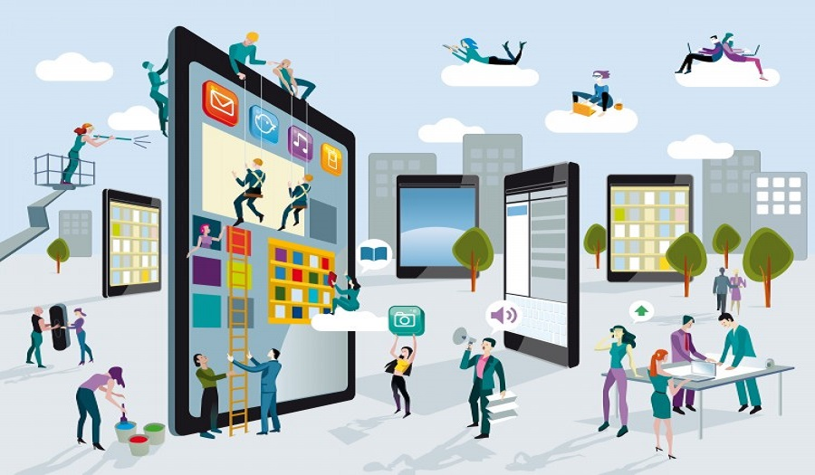
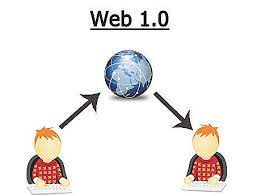
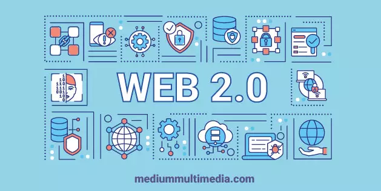

| Nombre |
Hechos |
Imagenes |
Referencias |
| Internet |
- 1960s: Desarrollo de ARPANET, precursor de Internet, por investigadores del Departamento de Defensa de los Estados Unidos.
- 1971: Correo electrónico se introduce en ARPANET, marcando el inicio de la comunicación digital a gran escala.
- 1983: Se establece el protocolo de control de transmisión/protocolo de internet (TCP/IP), estandarizando la comunicación en redes informáticas.
- 1989: Tim Berners-Lee propone la World Wide Web (WWW) como un sistema de gestión de información en el CERN, dando inicio a la era de la web.
- 1990s: Explosión del uso comercial de Internet, con la aparición de navegadores web, motores de búsqueda y empresas de tecnología.
- 2000s: Crecimiento exponencial de la web social, con la popularización de plataformas como Facebook, YouTube y Twitter.
- 2010s: Auge del Internet de las Cosas (IoT), conectando dispositivos cotidianos a la red para la automatización y la recopilación de datos.
- 2020s: Continuación del desarrollo de la Internet cuántica y la exploración de tecnologías emergentes como la inteligencia artificial y la realidad virtual en la red.
|
 |
- Levy, P. (1994). Collective intelligence: Mankind's emerging world in cyberspace. Cambridge, MA: MIT Press.
“La red no se trata solo de conectar computadoras, sino de conectar personas.” (p. 1)
- Bohnett, D. (2000, March 1). The Internet: The infinite library. The Industry Standard.
“El internet es una biblioteca infinita donde cada libro es una página web.”
- Abbate, J. (2000). Inventing the Internet. Cambridge, MA: MIT Press.
“La historia de internet es la historia de cómo una red de computadoras se convirtió en una red de personas.” (p. 2)
|
| Web 1.0 |
- 1989: Timbers Berners Lee propone la WWW
- 1991: Se crea el primer servidor Web en el CERN
- 1991: Se publica el primer sitio Web
- 1993: Se crea el primer navegador Web
- 1994: Se lanza el primer buscador Web
- 1994: Se crea el lenguaje de programacion de Java
|
 |
-
Tapscott, D. (1996). The digital economy: Promise and peril in the age of networked intelligence. New York: McGraw-Hill.
- “El internet es la columna vertebral de la nueva economía global.” (p. 10)
-
Castells, M. (1996). The rise of the network society. Cambridge, MA: Blackwell Publishers.
- “La red es el reflejo digital de nuestra sociedad, con sus virtudes y defectos amplificados.” (p. 47)
-
Anderson, C. (2006). The long tail: Why the future of business is selling less of more. New York: Hyperion Books.
“La evolución de la red ha transformado la información en un recurso accesible para todos.” (p. 12)
|
| Web 2.0 |
- 1997: Sixdegrees: la primera red social.
- 2004: Nace facebook.
- 2005: Youtube revoluciona el contenido multimedia.
- 2006: Twitter introduce el microblogging.
- 2007: Iphone y la web móvil.
- 2010: Instagram y el auge de las imagenes.
- 2020: Tiktok y entretenimiento social.
|
 |
-
7. Shirky, C. (2008). Here comes everybody: The power of organizing without organizations. New York: Penguin Press.
“El internet ha democratizado el acceso al conocimiento, permitiendo que la información fluya libremente.” (p. 37)
-
8. McLuhan, M. (1964). Understanding media: The extensions of man. New York: McGraw-Hill.
“La red ha creado una aldea global donde la distancia ya no es un obstáculo para la comunicación.” (p. 247)
-
9. Castells, M. (2001). The Internet galaxy: Reflections on the Internet, business, and society. Oxford: Oxford University Press.
“Internet es el fenómeno más importante en la historia de la comunicación humana desde la imprenta de Gutenberg.” (p. 3)
-
10. Weinberger, D. (2002). Small pieces loosely joined: A unified theory of the Web. Cambridge, MA: MIT Press.
“La evolución de la red ha cambiado la forma en que percibimos el espacio y el tiempo.” (p. 45)
|
| Web 3.0 |
- 1999: Tim Berners-Lee, inventa la web
- 2001: Se crean RDF para dar significado a la información en la web.
- 2004: Se lanzan proyectos para aplicar la web semántica a redes sociales y comunidades online.
- 2011: Se lanza "Linked Data" para publicar datos en la web.
- 2020: La Web Semántica en se emplea en la educación, salud, gobierno, etc.
- 2023: La evolución hacia blockchain. Permite una mayor transparencia de los datos.
|
|
-
11. Nielsen, M. (2011). Reinventing discovery: The new era of networked science. Princeton, NJ: Princeton University Press.
"Internet ha democratizado el acceso a la información científica, acelerando el avance del conocimiento." (p. xx)
-
12. Lessig, L. (2000). Code and other laws of cyberspace. New York: Basic Books.
"La red ha transformado la política al proporcionar nuevas formas de participación ciudadana y de organización política." (p. xx)
-
13. Rheingold, H. (1991). Virtual reality. New York: Summit Books.
"Internet ha permitido la creación de comunidades virtuales donde las personas pueden conectarse y compartir experiencias sin importar la distancia." (p. xx)
|
| Web 4.0 |
- 2020: Inicio de la integración masiva de la IA en las interfaces de usuario web.
- 2022: La web 4.0 se caracteriza por la interconexión total de dispositivos IoT, creando una experiencia web omnipresente.
- 2023: Desarrollo de sistemas de realidad aumentada y virtual en la web, ofreciendo experiencias inmersivas.
- 2024: La web 4.0 alcanza la plena autonomía con la integración de sistemas de autoaprendizaje y toma de decisiones.
- 2024: Inicio de la era de la web cuántica, con avances significativos en la seguridad y el procesamiento de datos.
|
 |
-
14. Tapscott, D., & Williams, A. D. (2008). Wikinomics: How mass collaboration changes everything. New York: Portfolio Penguin.
- "Internet ha permitido la colaboración a escala global, creando oportunidades para la innovación y el progreso." (p. xx)
-
15. Topol, E. (2012). The creative destruction of medicine: How the digital revolution will create better health care. New York: Basic Books.
- "La evolución de la red ha impulsado una revolución en el acceso a la salud, conectando pacientes con información y recursos médicos." (p. xx)
-
16. Shirky, C. (2011). The political power of social media: Technology, the public sphere, and political change. New York: Oxford University Press.
|